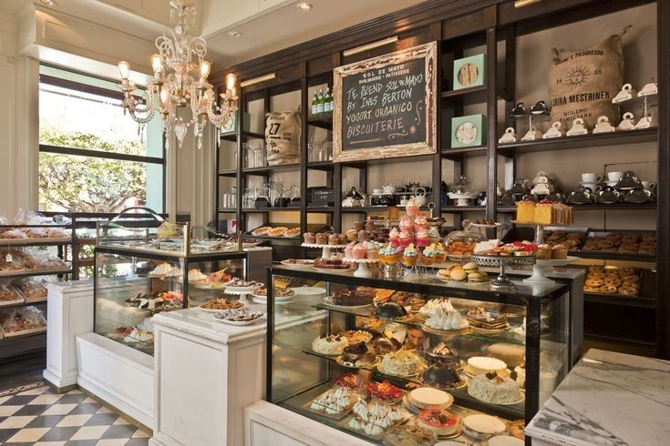

Downtown Donuts is more than just a shop; it's a family legacy built on fresh ingredients, community pride, and a passion for the perfect donut.

From a Simple Idea to a Downtown Staple
In 1992, founders Lori and Michael Smith noticed a need for a dedicated, high-quality bakery in the downtown area. They opened their doors with a simple philosophy: use the best ingredients, and greet every regular by name.
"Every donut we sell is a small piece of our family history. We treat our customers like neighbors, because that's what they are."
— Lori Smith, Co-Founder
Today, while our menu has grown to include coffee and rich flavors, our commitment to quality and community remains unchanged.
Our Journey: Key Milestones
1992: Grand Opening
Downtown Donuts opens its doors, featuring only five classic donut flavors and drip coffee.
2005: Second Generation
The Smith children joined the business, expanding the menu to include espresso drinks and new donut rotations.
2020: Digital Shift
We launch online ordering partnerships with DoorDash and UberEats, reaching the community even during tough times.
Today: Community Hub
We continue serving downtown while focusing on sustainable sourcing and family values.